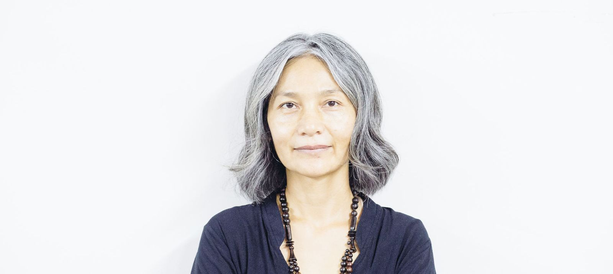
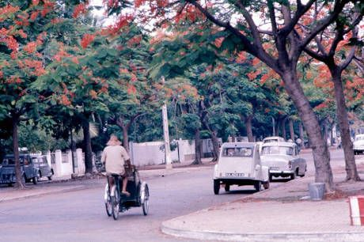
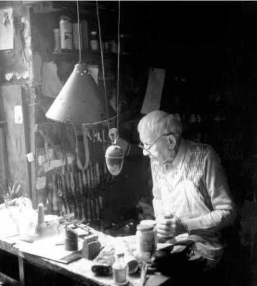
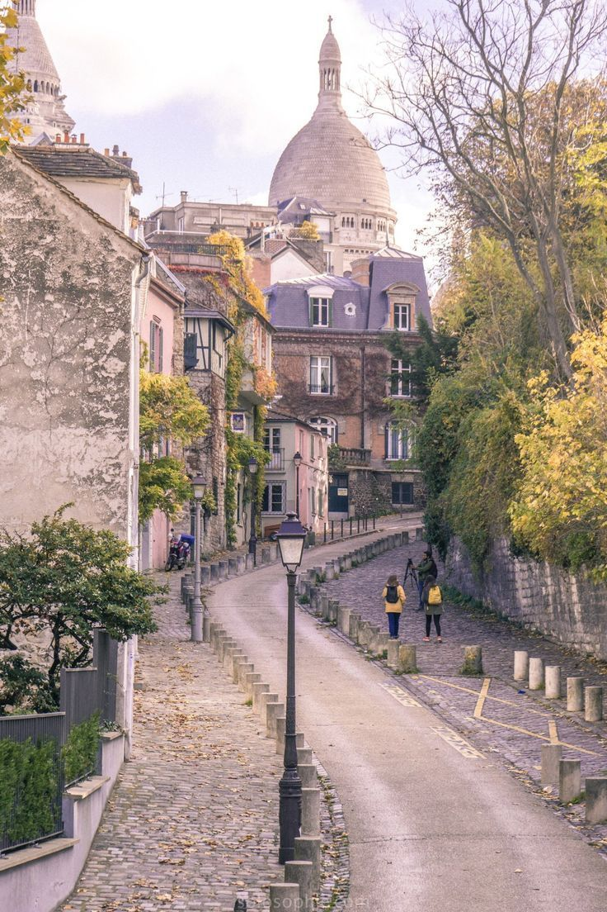
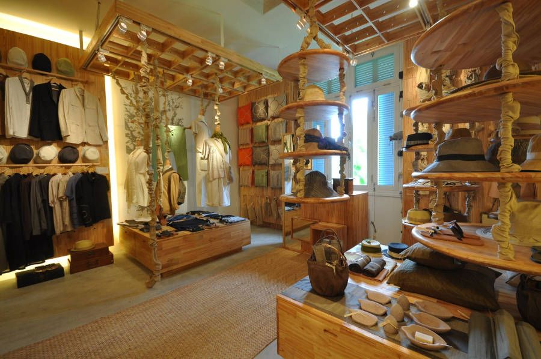
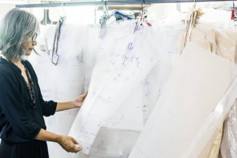
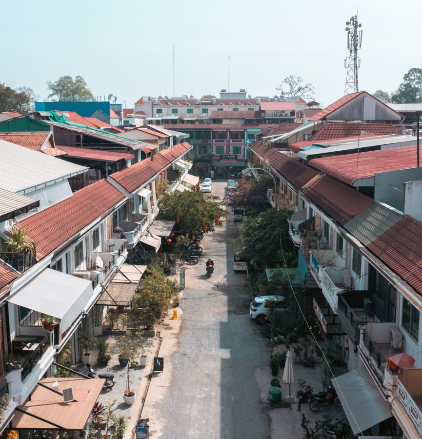
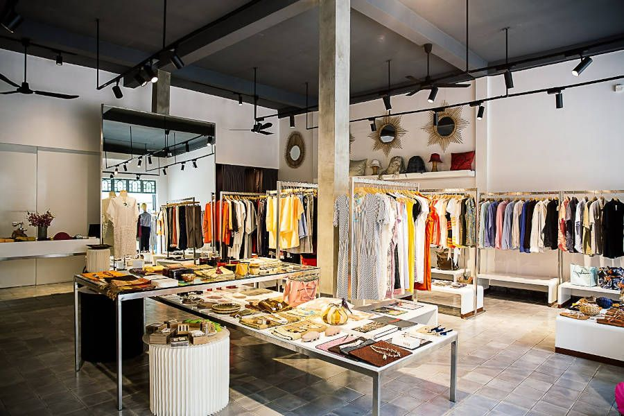
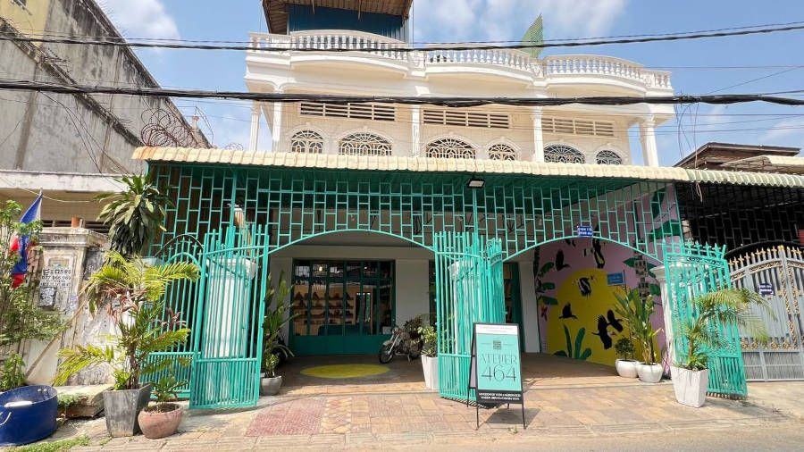

Sirivan's story
Born in Phnom Penh, raised in the Paris garment district, trained as a pattern maker and as a bootmaker. In 2009 Sirivan came home to Cambodia, and in Siem Reap she built the workshop she had always wanted.

The Sentier, Paris

Sirivan was born in Phnom Penh in 1971. She lived through the civil war before reaching France in 1982, at the age of twelve, where a family took her in in the Sentier — the old garment district in the heart of Paris.
She spent hours in front of the shop windows of the Rue Saint-Denis. They gave her a dream she would spend the next twenty years making real.
Learning the craft
In 1994 she enrolled at the Atelier Chardon-Savard, the Paris school of fashion design. Three years later she graduated as a stylist and pattern maker.
She went on to work with designer Delphine Kohler at Facteur Céleste, where she made zori, the Japanese sandal. At the same time she learned maedup, the Korean art of ornamental knotting, with textile artist Kim Sang Lan in a programme of the City of Paris. Her knotted sandals for Facteur Céleste appeared in Libération, Elle and Madame Figaro.
The bootmaker of Belleville

Through designer Estelle Yomeda she met Maurice Arnoult, the master bootmaker of the Rue de Belleville. From 2000 to 2002 she learned bespoke shoemaking in his workshop. He was a teacher, a storyteller and a philosopher, and Sirivan still quotes him.
Fashion school taught her style. A bootmaker taught her volume.
Shoes taught her how a flat pattern becomes a shape that holds a body. That precision — in the knot, in the last, in the seam — is still the rule in her workshop today.
A boutique in Montmartre

In her thirties she opened Sirivan Bottière, a workshop and boutique on the Rue Constance in Montmartre, making made-to-measure shoes for a demanding clientele. In a trade dominated by men, she was one of the very few women to run her own bespoke shoe shop on the street. She closed it in 2004 to take a new turn.
Back to Cambodia
From 1997 Sirivan travelled back to Cambodia again and again. In 2002 she met Theam Lim, then artistic director of Artisans Angkor, and saw Cambodian crafts coming back to life after the war. In 2004 she designed a collection of clothes and accessories for them; in 2006 they offered her a job as a designer, which meant leaving France for good. She hesitated.
That same year she met Lisbeth Moreau, former General Delegate of the Comité Colbert, the association of French luxury houses, then in charge of communications for Artisans Angkor. Together they founded Baray Occidental, named after the great reservoir of Angkor: a bridge between East and West. Sirivan designed home textiles, clothes and objects in France; village workshops in Cambodia wove them in silk, cotton and papyrus. The collection was shown at Maison & Objet in Paris in 2007.
Siem Reap, 2009
In 2009 the hesitation turned into a decision: Sirivan moved to Siem Reap with her family.
In 2010 her husband, Loïc Dumas, was working with Nathalie Saphon Ridel, founder of Khmer Attitude and a key figure in the revival of Cambodian craftsmanship. Together they opened Galerie Cambodge, a concept store at the Raffles Grand Hotel d'Angkor, and Sirivan designed its collection. For the first time it included clothes, and they sold at once: for the cut, for the finish, and because every piece came in every size.

The atelier

The first garments were sewn by a subcontractor in Phnom Penh. To control quality and grow, Sirivan opened her own workshop in Siem Reap in 2012: a design office, a pattern and sampling room, cutting and sewing stations, quality control.
Training is the heart of it. Rather than teaching each tailor one repetitive task, Sirivan trains them to master the whole garment. The pattern room — where an idea becomes a volume — is the centre of the workshop.
Today Sirivan Atelier de Couture makes the Maison Sirivan collections and works for others: designers, hotels and schools that need uniforms, NGOs such as Pour un Sourire d'Enfant, and the Compagnie Française de l'Orient et de la Chine in Paris, for which Sirivan creates home pieces in natural fibres.
The workshop has since moved to Sala Kamreuk, still in Siem Reap. It now produces both one-off pieces and series of up to 50,000.
Kandal Village

In 2014 Sirivan and Loïc opened the first Sirivan boutique on Hup Guan Street, with the workshop upstairs. With a handful of fellow shopkeepers they founded Kandal Village, today the most sought-after shopping street in Siem Reap.
In 2017 Françoise Gouezou and her brand Biniky Chic Nomad joined the adventure. The boutique doubled in size and became a concept store: Sirivan's clothes and home pieces alongside clever objects for travellers.

For several years her collections were also sold in the boutiques of Belmond La Résidence d'Angkor, Raffles Grand Hotel d'Angkor, Amansara and Anantara Angkor. For the Angkor National Museum in Siem Reap she designed a heritage collection, still on sale in the museum shop today.
Phnom Penh, 2026

In March 2026 Maison Sirivan opened in Phnom Penh at Atelier 464, a shared space for contemporary Cambodian design created with three other Siem Reap designers: fashion, art, footwear and furniture under one roof.
Key dates
- 1971 — born in Phnom Penh
- 1982 — arrives in Paris, aged twelve
- 1994–1997 — Atelier Chardon-Savard, stylist and pattern maker
- 2000–2002 — bespoke shoemaking with Maurice Arnoult
- until 2004 — Sirivan Bottière, Montmartre
- 2004 — first collection for Artisans Angkor
- 2006 — Baray Occidental
- 2009 — moves to Siem Reap
- 2010 — Galerie Cambodge, Raffles Grand Hotel d'Angkor
- 2012 — opens her own workshop in Siem Reap
- 2014 — Sirivan boutique, Kandal Village, with the workshop upstairs
- 2017 — the boutique becomes a concept store
- 2026 — Atelier 464, Phnom Penh
In the press
Libération (2000) · Elle (2001, 2015) · Madame Figaro (2002) · Footwear News (2002) · Maison & Objet (2007) · Marie Claire Idées (2013) · The New York Times (2015) · The Weekend Australian (2017).